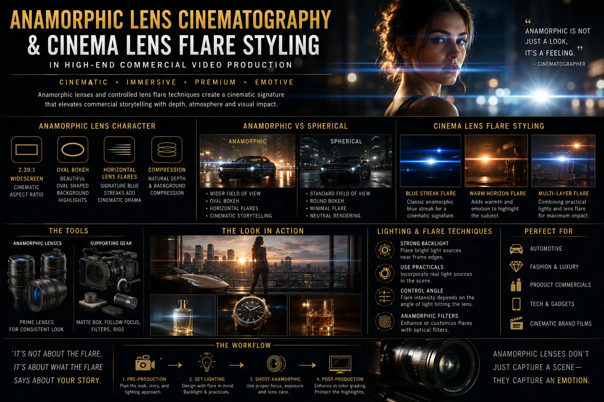
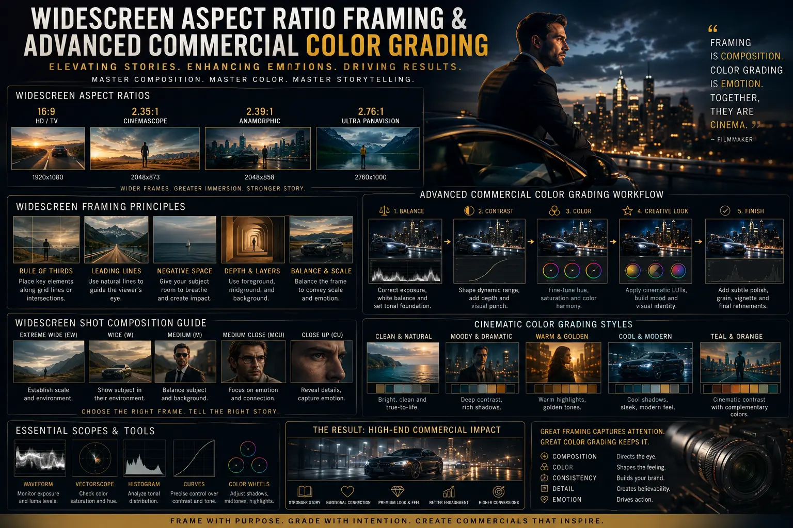

How Oval Bokeh and Horizontal Flare Optics Transform Commercial Video Quality
The Renaissance of Optical Character in Commercial Video Production
In an era where digital cinema sensors offer ultra-clean 8K resolution and near-perfect dynamic range, a paradoxical challenge has emerged in commercial advertising: hyper-sharp, clinically perfect video can often look sterile, cheap, or indistinguishable from smartphone footage. Modern consumers and luxury audiences can instantly sense when a commercial lacks cinematic weight. To solve this visual homogeneity, top directors, brand strategists, and cinematographers turn to Anamorphic Lens Cinematography to inject organic texture, dimensional depth, and unmistakable optical prestige into high-end commercial video production.
The secret behind this cinematic transformation lies in the physics of specialized glass optics. Unlike standard spherical optics that project light uniformly, specialized anamorphic glass distorts and compresses light horizontally before it reaches the sensor. When desqueezed during post-production, this optical process introduces legendary visual artifacts: vertically stretched oval background highlights (bokeh), dramatic horizontal streak lens flares, painterly field curvature, and silky focus fall-off. These optical characteristics redefine how products and human subjects are framed within widescreen aspect ratio framing.
Strategic camera lens choice serves as the fundamental building block of a commercial campaign's visual identity. By pairing specialized optics with strategic Widescreen Commercial Staging, deliberate cinema lens flare styling, creative oval bokeh tricks, and Advanced Commercial Color Grading, brands can elevate standard promo videos into captivating visual experiences that hold viewer attention and project undeniable brand authority.
Deconstructing the Glass: True Anamorphic vs Spherical Lenses
To understand why optical character transforms video quality, creative directors must first understand the fundamental physical differences between True anamorphic vs spherical lenses. Spherical lenses feature rotationally symmetrical glass elements that project light rays evenly onto the camera sensor. This creates clean, geometrically accurate images with circular out-of-focus highlights and predictable linear alignment. While spherical optics offer high technical precision—making them popular for technical documentation or sports broadcasting—they lack the painterly texture that audiences associate with silver-screen cinema.
Conversely, Anamorphic Lens Cinematography employs cylindrical optical elements inside the lens barrel. These cylindrical elements squeeze a wider horizontal field of view (typically by a squeeze factor of 1.33x, 1.5x, 1.8x, or 2.0x) onto a standard 16:9 or 4:3 camera sensor area. In post-production, the footage is desqueezed back to its intended wide proportions, resulting in expansive 2.39:1 CinemaScope composition without discarding vertical sensor resolution.
Beyond mere aspect ratio, the optical geometry of True anamorphic vs spherical lenses yields four transformative visual traits:
- Elliptical Background Blur: Because the horizontal dimension is optically squeezed while the vertical dimension remains unsqueezed, out-of-focus specular lights stretch vertically into tall, elegant ovals rather than remaining round circles.
- Horizontal Flare Streaks: Light rays hitting internal cylindrical elements stretch horizontally across the frame, creating signature streaks of blue, gold, or silver light whenever direct light hits the lens.
- Dimensional Depth Compression: Anamorphic lenses capture a wide horizontal field of view while retaining the depth characteristics of a longer focal length, creating a unique 3D pop that separates subjects cleanly from background layers.
- Organic Focus Roll-Off and Breathing: As focus shifts from foreground to background, anamorphic optics produce a subtle vertical stretching motion known as focus breathing, adding organic movement to emotional rack-focus shots.
Selecting anamorphic glass over spherical options is not merely a technical preference; it is a strategic decision in camera lens choice that directly shapes how viewers perceive product quality, craftsmanship, and brand prestige.
The Science and Art of Oval Bokeh Tricks in Commercial Lighting
Out-of-focus highlights—commonly referred to as bokeh—play a massive role in guiding viewer eye movement. In standard spherical videography, background bokeh appears as flat, round dots that can often feel distracting or chaotic. In Anamorphic Lens Cinematography, elliptical background ovals create a graceful vertical rhythm that frames the primary product or model with sculptural elegance.
Professional cinematographers utilize specific oval bokeh tricks during set construction and lighting design to maximize this optical effect:
- Specular Point Light Placement: Setting up tiny, intense point lights (such as exposed tungsten filaments, fairy lights, reflected jewelry highlights, or wet architectural surfaces) behind the main subject transforms static backgrounds into glowing, vertically stretched gems of light.
- Aperture Sweet-Spot Tuning: Shooting anamorphic lenses wide open (e.g., at T2.0 or T2.8) yields the most extreme oval elongation. Stopping down slightly to T4 sharpens the center subject while preserving subtle oval distortion at the frame edges.
- Distance Ratio Optimization: Positioning the subject close to the camera while pushing background practical lights far into the distance expands the relative scale of the oval ovals, creating dramatic separation for luxury product showcases.
- Custom Front-Filter Elements: For hybrid budgets where anamorphic optics are combined with specialized cinema prime glass, magnetic anamorphic streak filters or internal elliptical masks can be deployed as secondary oval bokeh tricks to maintain consistent visual language across secondary B-roll units.
When executed with intention, these oval bokeh tricks transform busy commercial locations into lush, painterly backgrounds that make products pop off the screen.
Cinema Lens Flare Styling: Mastering Light and Flare Aesthetics
Lens flare was once considered a technical flaw in optical engineering. Today, cinema lens flare styling is recognized as one of the most powerful emotive tools in modern commercial filmmaking. When intense key lights, sun flares, or practical car headlights hit the cylindrical glass of an anamorphic lens, the light flares out across the horizontal axis, producing long, mesmerizing streaks.
In high-end commercial video production, lens flares must never occur by accident; they must be orchestrated with razor-sharp precision. Excessive, uncontrolled flaring can wash out shadow contrast, obliterate product details, or obscure brand logos. Controlled cinema lens flare styling balances visual drama with image clarity:
- Coating Selection: Modern multi-coated anamorphic lenses produce clean, controlled blue or silver horizontal flares that look sleek and high-tech—ideal for corporate tech promos, electric vehicles, and modern fashion. Uncoated or vintage single-coated anamorphic lenses produce warm, organic amber flares that evoke nostalgia, craft heritage, and artisan luxury.
- Edge-of-Frame Light Skimming: Cinematographers position small LED kickers or sun-guns just out of frame, skimming light across the front glass element. As the camera pans or the actor moves, horizontal flares sweep dynamically across the screen, adding energy to transitions.
- Practical In-Frame Lighting: Incorporating real-world light sources—such as streetlights in night scenes, desk lamps in executive offices, or studio spotlights—allows cinema lens flare styling to feel grounded in the story rather than artificially added in post-production.
Masterful flare management ensures that flares act as sophisticated visual punctuation marks that elevate production value without compromising product readability.
Key Benefits of Anamorphic Optics in High-End Commercial Video
Investing in specialized anamorphic glass delivers tangible visual advantages for brands aiming to conquer competitive ad markets. The key optical benefits include:
Organic 3D Subject Separation
Anamorphic optics render multi-layered visual depth, separating products and actors cleanly from complex backgrounds with smooth, natural focus fall-off.
Iconic Horizontal Flare Streaks
Controlled streak flares create a high-budget cinematic aesthetic that instantly signals premium production quality to TV and digital audiences.
Expansive Widescreen Canvas
Utilizing 2.39:1 CinemaScope framing provides a wider horizontal field of view, ideal for multi-actor staging, expansive architecture, and landscape visuals.
Rich Color Grading Synergy
Softer contrast roll-off and organic optical character feed seamlessly into Advanced Commercial Color Grading nodes for film-emulation looks.

Widescreen Commercial Staging and Composition Dynamics
Switching from traditional 16:9 HD framing to 2.39:1 CinemaScope alters the visual geometry of the screen. Directors cannot simply capture standard footage and crop the top and bottom with black bars; doing so wastes sensor real estate and disrupts subject balance. True widescreen commercial storytelling requires Widescreen Commercial Staging, where blocking, set dressing, and subject placement are optimized for a broad horizontal canvas.
Principles of effective Widescreen Commercial Staging under strict widescreen aspect ratio framing:
- Lateral Blocking Planes: Actors and products are staged horizontally across the left, center, and right thirds of the frame. This creates multi-point visual interest, allowing viewers to explore the frame while the main action unfolds naturally.
- Dynamic Negative Space Balance: The wider aspect ratio provides ample negative space around products. Cinematographers utilize this open area to place high-end typography, brand taglines, or environmental context without cluttering the main focal point.
- Multi-Layered Depth Zones: Staging props in distinct foreground, midground, and background zones takes full advantage of anamorphic depth compression, creating a immersive theatrical feel.
- Eye-Track Vectoring: Using physical architecture, lighting contrast, and character glances to guide the viewer’s eye smoothly across the 2.39:1 horizontal plane prevents visual fatigue during fast-paced commercial edits.
Through precise Widescreen Commercial Staging, every frame becomes a carefully composed painting that commands respect on both broadcast television screens and digital devices.
Aligning Camera Lens Choice with Advanced Commercial Color Grading
High-end video production does not end when the camera stops rolling. The physical interaction between glass optics and camera sensors heavily influences post-production workflow. Strategic camera lens choice directly dictates how colorists approach Advanced Commercial Color Grading in the color suite.
Anamorphic footage possesses unique optical traits that interact beautifully with modern color grading pipelines:
- Highlight and Shadow Roll-Off: Anamorphic lenses render softer highlight transitions around bright specular sources, allowing colorists to roll off extreme highlights smoothly without harsh digital clipping.
- Chromatic Aberration and Halation: Micro-imperfections near the edges of vintage anamorphic glass produce subtle color fringing and warm halation around high-contrast edges. Colorists lean into these characteristics, pairing them with film print emulation (FPE) Kodak and Fuji LUTs to achieve authentic celluloid aesthetics.
- Flare Color Isolation: During Advanced Commercial Color Grading, colorists isolate horizontal streak flares using secondary power windows. This allows them to adjust flare hues—turning harsh cool flares into elegant cyan or warm amber accents that align perfectly with brand style guides.
- Skin Tone Preservation: Because anamorphic lenses naturally soften harsh skin blemishes while retaining micro-texture, colorists can apply bold creative contrast curves to the environment without ruining smooth, natural skin tones.
By bridging on-set Anamorphic Lens Cinematography with expert Advanced Commercial Color Grading, post-production teams craft signature looks that make commercial campaigns instantly recognizable.
Platform-Specific Multi-Format Strategy
Modern commercial campaigns must perform across diverse media channels—from ultra-wide cinema screens and 16:9 TV broadcasts to 9:16 vertical social feeds. Deploying anamorphic optics requires a versatile multi-format framing strategy:
Broadcast & Cinema Placement
- Native 2.39:1 CinemaScope framing for theatrical release and premium OTT platforms
- Full-sensor resolution capture maximizing sharpness and dynamic range
- Uncompromised lateral Widescreen Commercial Staging
- High-impact surround sound and horizontal flare visuals
Social Media & Vertical Re-Framing
- Center-weighted framing protection for 9:16 vertical Instagram Reels & Shorts
- Vertical crop extraction leveraging the tall, elongated oval bokeh highlights
- On-screen animated typography placed in safe central action zones
- Dynamic motion tracking to keep key subjects centered in vertical formats
Digital Web & E-Commerce Headers
- Custom ultrawide aspect ratios tailored for high-converting brand landing pages
- Looped silent background video showcasing rich oval bokeh textures
- High-contrast product highlights enhanced by Advanced Commercial Color Grading
- Fast-loading web-optimized formats with crisp optical clarity

Partnering with The PhD Ads in Madurai for High-End Commercial Video Production
Creating commercials that leverage the full power of Anamorphic Lens Cinematography requires deep technical expertise, specialized camera equipment, precise lighting control, and advanced post-production mastery. At The PhD Ads, based in Madurai, we bridge creative vision with cutting-edge optical technology to help brands stand out in crowded markets.
Our team manages every phase of production:
- Pre-Production Optical Strategy: Evaluating campaign goals to make the ideal camera lens choice, selecting native anamorphic primes or specialized cinema optics tailored to your brand story.
- On-Set Cinematography & Staging: Executing flawless Widescreen Commercial Staging, precision lighting setups for oval bokeh tricks, and controlled cinema lens flare styling.
- Post-Production Mastery: Precise desqueezing, multi-format widescreen aspect ratio framing delivery, and industry-leading Advanced Commercial Color Grading for a flawless final render.
Whether you are launching a luxury product line, producing a high-impact corporate brand film, or scaling a regional campaign across digital channels, The PhD Ads delivers visual excellence that drives measurable business growth.
Conclusion
Commercial video success depends on making a lasting emotional impression within the first few seconds of viewing. In a sea of generic digital content, the painterly character of Anamorphic Lens Cinematography—defined by tall oval bokeh, dramatic horizontal flares, dimensional depth, and cinematic widescreen aspect ratio framing—provides the competitive edge modern brands need.
By combining intentional camera lens choice with expert Widescreen Commercial Staging, creative cinema lens flare styling, masterly oval bokeh tricks, and state-of-the-art Advanced Commercial Color Grading, businesses can produce high-end commercial video production assets that elevate brand equity and capture long-term market leadership.
Key Topics
Ready to Elevate Commercial Video Quality with Anamorphic Optics?
At The PhD Ads in Madurai, we specialize in high-end commercial video production utilizing anamorphic lens cinematography, widescreen commercial staging, and advanced commercial color grading. Transform your brand's visual identity with cinematic optics that captivate viewers and drive engagement.
Email: team@e2o.in